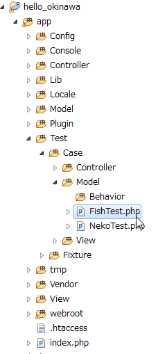
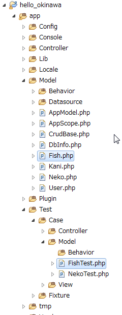
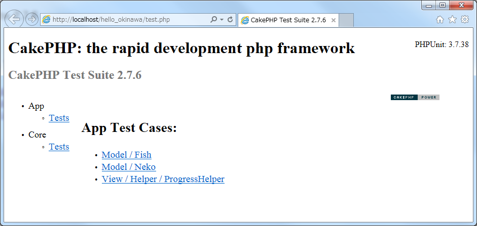

メリット
数値を少し変えて繰り返し行うようなテストに効果的である。デメリット
PHPUnitではテストできない箇所がある。テストできないケース
どうしてもPHPUnitではテストできない箇所もある。http://localhost/hello_okinawa/test.php
<? php
App::import('vendor', 'vendor/autoload'); // ※bootstrap.phpに記述している場合は不要。
require_once CAKE . 'TestSuite' . DS . 'CakeTestSuiteDispatcher.php';
CakeTestSuiteDispatcher::run();
?>
App::import('vendor', 'vendor/autoload');
このコードは、Composerでインストールしたすべてのライブラリを使用可能にする。| アサーション関数 | 判定方法 |
|---|---|
| assertNull($variable) | $variable が null である |
| assertEquals($expected,$actual) | $expected と $actual が等しい。 |
| assertSame(($expected,$actual) | $expected と $actual は型も含めて等しい。 |
| assertTrue($condition) | $condition は true である |
| assertFalse($condition) | $condition は false である |
参考リンク
公式ドキュメント：付録Aアサーション| 基本クラス | 説明 |
|---|---|
| PHPUnit_Framework_TestCase | PHPUnitの基本テストクラス。通常、一般的なテストクラスは、このクラスを継承する。 |
| CakeTestCase | CakePHPに特化した基本テストクラス。 PHPUnit_Framework_TestCaseを継承して拡張している。 PHPUnitではなくCakePHPが用意している基本テストクラスである。 |
| ControllerTestCase | CakePHPのコントローラに特化した基本テストクラス。 CakePHPコントローラのテストクラスを作るとき、この基本クラスを継承する。 |
| PHPUnit_Extensions_PerformanceTestCase | パフォーマンスが関わってくるテスト。指定時間に処理が終わっているかを確認できる。 |
| PHPUnit_Extensions_OutputTestCase | 出力を確認できる。 |
| PHPUnit_Extensions_Database_TestCase | データベースまわり用。 |
<?php
App::uses('Model', 'Model');
class Fish extends Model {
public $name='Fish';
public $useTable = false;
public $validate = null;
public function getName1(){
return 'グルクン';
}
public function getValue1(){
return 999;
}
}
手順：Fish.phpのテストクラス作成、テストコード記述、テスト実行
「クラス名 + Test.php」 
<?php
App::uses('Fish', 'Model');
class FishTest extends CakeTestCase {
// テストの準備
public function setUp() {
$this->Fish = new Fish;
parent::setUp();
}
// テスト終了後の片づけ
public function tearDown() {
unset($this->Fish);
parent::tearDown();
}
public function testGetName1() {
$res = $this->Fish->getName1();
$this->assertEquals('グルクン', $res);
}
public function testGetValue1() {
$res = $this->Fish->getValue1();
$this->assertEquals(999, $res);
}
}
http://localhost/hello_okinawa/test.php
CakePHPのコントローラをテスト
PHP Unitはコントローラをクラス単位でテストできる。CakePHPのモデルをテスト
PHP Unitはモデルをクラス単位でテストできる。CakePHPのビューをテスト
レイアウト崩れはPHP Unitでテストできない。ブラウザのリロードによる二重登録テスト
入力画面や編集画面からの登録結果画面では二重登録のバグが出てくるかもしれません。セッション切れのテスト
セッションに入っているデータにより、振る舞いの異なる画面では、セッションに関するテストが必要である。様々なブラウザでテスト
Chrome,Firefox,Opera,Internet Explorer，SafariなどでレイアウトやJavascriptまわりを中心にテストする。セキュリティのテスト
クレジット情報など個人情報が漏れる可能性がないか、よく調査する。認証機能のテスト
認証を必要とするページに、認証せずにページにアクセスできるかテストする。レイアウトまわりのテスト
レイアウトの崩れがないかテストをする。負荷テスト
大量アクセスにどこまで耐えられるかテストする。マルチスレッド、並列処理、排他制御のテスト
複数のスレッドによる同時アクセステストである。注意
コントローラでは、末尾に「$this->render();」付け加える必要がある。テストコントローラの配置場所
「app/Test/Case/Controller」にテストコントローラを配置する。テスト対象のコントローラ
class FishController extends AppController {
public $name = 'fish';
function test1(){
$this->render();
}
}
テストコントローラ
class FishControllerTest extends ControllerTestCase {
public function testTest() {
$result=$this->testAction('/fish/test1');
debug($result);//出力のみ
$this->assertTextContains('Fish', $result);
}
}
test.php
「http://localhost/hello_okinawa/app/webroot/test.php」でテスト実行する。参考リンク
テスト対象のコントローラ
class FishController extends AppController {
public $name = 'fish';
function test2(){
$key1='none';
if(!empty($this->request->data['Fish'])){
$data = $this->request->data['Fish'];
$key1 = $data['key1'];
}
$this->set(array('key1'=>$key1));
$this->render();
}
}
テストコントローラ
class FishControllerTest extends ControllerTestCase {
public function testTest2() {
$data = array(
'Fish' => array(
'key1' => 'hello world',
)
);
$result = $this->testAction(
'/fish/test2',
array('data' => $data, 'method' => 'post')
);
debug($result);
$this->assertTextContains('hello world', $result);
}
}
array('data' => $data, 'method' => 'get')
return $this->redirect(array('action' => 'index'));
テスト対象のコントローラ
class FishController extends AppController {
function test3(){
$this->redirect(array('action' => 'test3_r'));
}
function test3_r(){
}
}
テストコントローラ
class FishControllerTest extends ControllerTestCase {
$this->testAction('/fish/test3');
$this->assertContains('/test3_r', $this->headers['Location']);// リダイレクト先ページが「test3_r」であるかテストする。
}
テスト対象のコントローラ
class FishController extends AppController {
function test4(){
$msg = $this->Session->read('test4_fish');
$this->set(array('msg'=>$msg));
$this->render();
}
}
テストコントローラ
class FishControllerTest extends ControllerTestCase {
public function testTest4() {
// モックをセット
$this->controller = $this->generate('Fish', array(
'components' => array(
'Session',
)
));
// モックにセッションデータを仮セット
$this->controller->Session->expects($this->any())
->method('read')
->will($this->returnValueMap([['test4_fish', '勝連城']]));
$result = $this->testAction('/fish/test4');
debug($result);
$this->assertTextContains('勝連城', $result);
}
}
テストコードの例（参照系）
モデル
App::uses('Model', 'Model');
class Fish extends Model {
public $name='Fish';
public function getRec($id){
$conditions=array(
"id = {$id}",
);
$data=$this->find('all',array(
'conditions'=>$conditions,
));
return $data;
}
}
App::uses('Fish', 'Model');
class FishTest extends CakeTestCase {
public function testUpdateRec(){
$this->Fish->begin();//トランザクション開始
$res=$this->Fish->updateRec(2,"トビウオ");//テスト実施
debug($res);
$this->Fish->rollback();// ロールバック
$this->assertEquals(2, $res['Fish']['id']);
$this->assertEquals("トビウオ", $res['Fish']['fish_name']);
}
}
更新系のテストについて
更新系は、データベースを更新するため1回しかテストできないという事態に陥りやすい。フィクスチャのメリット
仮のテストデータでテストができる。フィクスチャのデメリット
MakeGoodプラグインではフィクスチャが使えない。フィクスチャを使うには
フィクスチャを使う前に、app/Config/database.php にある $test に別のデータベースを定義する必要がある。参考リンク
公式ドキュメント：フィクスチャ手順
Configure::write('debug', 2);
1または2にする。0はデバッグモードOFF。
class DATABASE_CONFIG {
public $default = array(
'datasource' => 'Database/Mysql',
'persistent' => false,
'host' => 'localhost',
'login' => 'root',
'password' => 'xxxxxx',
'database' => 'hello_okinawa',
'prefix' => '',
'encoding' => 'utf8',
);
public $test = array(
'datasource' => 'Database/Mysql',
'persistent' => false,
'host' => 'localhost',
'login' => 'root',
'password' => 'xxxxxx',
'database' => 'hello_okinawa_test',
'prefix' => '',
'encoding' => 'utf8',
);
～ 省略 ～
手順
class FishFixture extends CakeTestFixture {
// 異なるテスト用データソースにフィクスチャを読み込む時にこのプロパティを指定してください。
public $useDbConfig = 'test';
public $import = 'Fish';// DBのfishテーブルからフィールド情報をインポートする。
// 仮データをセットする
public $records = array(
array(
'id' => 1,
'fish_name' => 'First Fish',
'fish_date' => '2007-03-01',
'value1' => '10',
),
array(
'id' => 2,
'fish_name' => 'kani',
'fish_date' => '2007-03-02',
'value1' => '20',
),
array(
'id' => 3,
'fish_name' => 'サメ',
'fish_date' => '2007-03-03',
'value1' => '30',
),
array(
'id' => 4,
'fish_name' => 'グルクン',
'fish_date' => '2007-03-04',
'value1' => '40',
),
);
// 動的な仮データをセットしたい場合は、こちらのメソッドでセットする
public function init() {
$this->records[3]['fish_date'] = date('Y-m-d');
parent::init();
}
}
App::uses('Fish', 'Model');
class FishTest extends CakeTestCase {
public $fixtures = array('app.fish');// フィクスチャをセットする。
public function setUp() {
//$this->Fish = new Fish;
parent::setUp();
$this->Fish = ClassRegistry::init('Fish');
}
public function tearDown() {
unset($this->Fish);
parent::tearDown();
}
// 更新系メソッドのテストコード
public function testUpdateRec(){
$this->Fish->begin();//トランザクション開始
$res=$this->Fish->updateRec(2,"トビウオ");//テスト実施
debug($res);
$this->Fish->rollback();// ロールバック
$this->assertEquals(2, $res['Fish']['id']);
$this->assertEquals("トビウオ", $res['Fish']['fish_name']);
}
}
モデル
App::uses('Model', 'Model');
class Fish extends Model {
public $name='Fish';
public function insertRec($fish_name){
$rec=array(
'fish_name' => $fish_name,
'fish_date' => date('Y-m-d'),
'value1' => 6,
);
$res=$this->save($rec, array('atomic' => false));
return $res;
}
}
テストコード
App::uses('Fish', 'Model');
class FishTest extends CakeTestCase {
// テストの準備
public function setUp() {
//$this->Fish = new Fish;
parent::setUp();
$this->Fish = ClassRegistry::init('Fish');
}
// テスト終了後の片づけ
public function tearDown() {
unset($this->Fish);
parent::tearDown();
}
public function testInsertRec(){
$this->Fish->begin();//トランザクション開始
$res=$this->Fish->insertRec("カツオ");//テスト実施
debug($res);
$this->Fish->rollback();// ロールバック
$this->assertEquals("カツオ", $res['Fish']['fish_name']);
}
}
DB更新系のテストはトランザクション内で行い、ロールバックで戻すのが基本である。モデル
App::uses('Model', 'Model');
class Fish extends Model {
public $name='Fish';
public function updateRec($id,$fish_name){
$rec=array(
'id' => $id,
'fish_name' => $fish_name,
'fish_date' => date('Y-m-d'),
'value1' => 6,
);
$res=$this->save($rec, array('atomic' => false));
return $res;
}
}
テストコード
App::uses('Fish', 'Model');
class FishTest extends CakeTestCase {
// テストの準備
public function setUp() {
//$this->Fish = new Fish;
parent::setUp();
$this->Fish = ClassRegistry::init('Fish');
}
// テスト終了後の片づけ
public function tearDown() {
unset($this->Fish);
parent::tearDown();
}
public function testUpdateRec(){
$this->Fish->begin();//トランザクション開始
$res=$this->Fish->updateRec(2,"トビウオ");//テスト実施
debug($res);
$this->Fish->rollback();// ロールバック
$this->assertEquals(2, $res['Fish']['id']);
$this->assertEquals("トビウオ", $res['Fish']['fish_name']);
}
}
DB更新系のテストはトランザクション内で行い、ロールバックで戻すのが基本である。| テスト難易度 | save,saveAll | トランザクション | 例 | レスポンス | テストについて |
|---|---|---|---|---|---|
| ○ | save | 有り | $res=$this->save($rec, array('atomic' => false)); |
$res=更新データの配列 | 1行更新用。更新したデータがレスポンスとして取得できる上、ロールバックもできるのでテストがとてもしやすい。 |
| △ | save | 無し | $res=$this->save($rec); |
$res=更新データの配列 | 1行更新用。更新したデータがレスポンスとして取得できるが、ロールバックはできない。テストコードでデータを戻すときはSQLのdeleteやupdateを使わなければならない。 |
| △ | saveAll | 有り | $res=$this->saveAll($data, array('atomic' => false)); |
$res=true | 複数行の更新用。レスポンスはtrueかfalseなので、更新したデータはSQLのselect文で取らねばならない。ロールバックはできるのでテストはしやすい。 |
| × | saveAll | 無し | $res=$this->saveAll($data); |
$res=true | 複数行の更新の上、ロールバックが効かない。複数行のデータを元に戻すのは危険が伴う上、たいへんである。PHPUnitではテストしないほうがよい。 |
テストスイートの作成手順
<?php
class AllTestsTest extends CakeTestSuite {
public static function suite() {
$suite = new CakeTestSuite('All tests');
$suite->addTestDirectoryRecursive(TESTS . 'Case');
return $suite;
}
}
http://localhost/hello_okinawa/app/webroot/test.php
モデルのみ実行するテストスイート
AllModelTest.php
<?php
class AllModelTest extends CakeTestSuite {
public static function suite() {
$suite = new CakeTestSuite('All model tests');
$suite->addTestDirectory(TESTS . 'Case/Model');
return $suite;
}
}
参考リンク
公式ドキュメント：テストスイート注意
コードカバレッジが100%でも、テストは不十分であるケースがある。コードカバレッジを確認する手順
http://localhost/hello_okinawa/test.php
FishController.php Code coverage: 48.72%
テストパターンのヒント
文字列系のテスト入力パターン
数値系のテスト入力パターン
日付型のテスト入力パターン
bool系のテスト入力パターン
計算系のテストパターン
電話番号のテスト入力パターン
PHPUnitで利用できる関数
| アサーション関数 | 判定方法 |
|---|---|
| assertGreaterThan($expected,$actual) | $expected < $actual である |
| assertLessThan($expected,$actual) | $expected > $actual |
| assertGreaterThanOrEqual($expected,$actual) | $expected <= $actual である |
| assertLessThanOrEqual($expected,$actual) | $expected >= $actual である |
命令網羅 ＜ 分岐網羅 ＜ 条件網羅ただし、精度が増すほどテストケースは多くなり、テスト量も増える。
定義
プログラム中の主な命令を必ず一度は実行すること。
if(...){
～ 主な命令処理 ～
} else {
～ どうでもいい処理 ～
}
「主な命令処理」だけ一回、テスト実施すればよく、それ以外の分岐は省略できる。どのようなときに行うテストか？
命令網羅は分岐網羅と似ているが、こちらは命令文に重きを置いている。定義
プログラム中の条件分岐について、分岐を必ず一度は実行すること
if(...){
～ 分岐処理1 ～
} else if(...){
～ 分岐処理2 ～
}
「分岐処理1」と「分岐処理2」を最低1回はテスト実施する。どのようなときに行うテストか？
条件網羅と命令網羅の中間くらいのテストケース量と精度である。| 平日/土日 | 午前/午後 | 割引/通常 |
|---|---|---|
| 平日である | 午前中である | 3割引価格 |
| 平日である | 午後以降である | 通常価格 |
| 土日である | 午前中である | 通常価格 |
| 土日である | 午後以降である | 通常価格 |
定義
プログラムの条件分岐について、組み合わせをすべて実施する。
if( ～ 複雑な条件 ～){
...
} else if ( ～ 複雑な条件 ～ ) {
...
}
複雑な条件を分解し、一つ一つ、すべて網羅するようにテストする。どのようなときに行うテストか？
AND条件、OR条件、大なり（＞）、小なり（＜）などの複雑な条件組み合わせなら、こちらを採用する。| 月間 | 料金 | 代表の日付の例 |
|---|---|---|
| 7月～8月 | 割増料金 | 7月15日 |
| 9月～11月 | 通常料金 | 10月3日 |
| 12月～3月 | 休園 | 1月1日 |
| 4月～6月 | 通常料金 | 5月1日 |